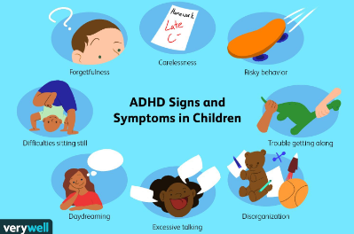
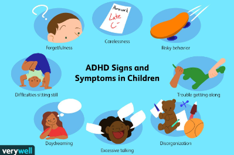
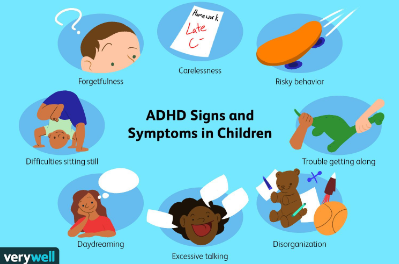

Being overly hyperactive,for example not being able to stand or sit for long periods of time in a calm
environment, for example in a classroom.
Having a bad memory of things, losing track of things that they need to remember or do and or being careless in
the
things they do.eg forgetting to do homework or making many careless mistakes in their work.

For adults, symptoms include
continually starting new tasks before finishing old ones
continually losing or misplacing things
mood swings, irritability and a quick temper
Although not always the case, some adults or teens may also experience this symptoms along with adhd
 
